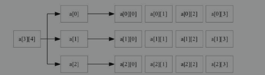
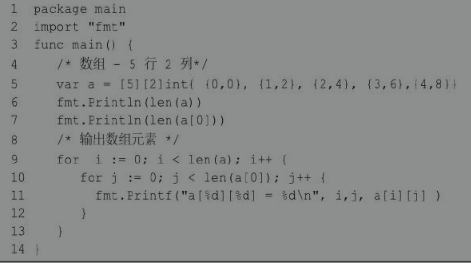
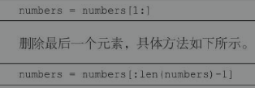
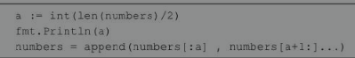

5 Go语言的内置容器
5.1 数组
数组的概念
数组是相同类型的一组数据构成的长度固定的序列，其中数据类型包含了基本数据类型、复合数据类型和自定义类型。数组中的每一项被称为数组的元素。数组名是数组的唯一标识符，数组的每一个元素都是没有名字的，只能通过索引下标（位置）进行访问。
因为数组的内存是一段连续的存储区域，所以数组的检索速度是非常快的；
但是数组也有一定的缺陷，就是定义后长度不能更改。
数组的语法
Go语言数组声明需要指定元素类型及元素个数，语法格式如下。
var 变量名 [数组长度] 数据类型
以上为一维数组的定义方式，数组长度必须是整数且大于0，未初始化的数组不是nil，也就是说没有空数组（与切片不同）。
初始化数组语法格式如下。
var nums = [5]{1,2,3,4,5}
初始化数组中 {} 中的元素个数不能大于 [] 中的数字。
如果忽略 [] 中的数字，不设置数组长度，Go语言会根据元素的个数来设置数组的长度。可以忽略声明中数组的长度并将其替换为“…”。编译器会自动计算长度。语法格式如下。
var nums = [...]int{1,2,3,4,5,6}
修改数组内容，语法格式如下:
nums[4] = 23
以上实例读取数组第5个元素。数组元素可以通过索引（位置）来读取（或者修改），索引从0开始，第1个元素索引为0，第2个索引为1，以此类推。
数组的长度
数组的长度是数组的一个内置常量，通过将数组作为参数传递给 len()函数，可以获得数组的长度。忽略声明中数组的长度并将其替换为“…”，编译器可以找到长度。接下来使用案例演示获取数组长度的方式：
package main
import "fmt"
func main(){
a := [4]int64{12,22,33,55}
b := [...]float64{23.3,22,23.123,12.123}
fmt.Printf("len_a:%d,len_b:%d \n",len(a),len(b)) //len_a:4,len_b:4
}
遍历数组
package main
import "fmt"
func main(){
a := [4]int64{12,22,33,55}
//b := [...]float64{23.3,22,23.123,12.123}
// 遍历方式1
for i:= 0;i<len(a);i++{
fmt.Printf("%d ",a[i])
}
fmt.Println()
// 遍历方式2
for _, value := range a{
fmt.Printf("%d ",value)
}
}
多维数组——主要是二维数组
由于数据的复杂程度不一样，数组可能有多个下标。一般将数组元素下标的个数称为维数，根据维数，可将数组分为一维数组、二维数组、三维数组、四维数组等。二维及以上的数组可称为多维数组。
Go语言的多维数组声明方式：
var variable_name [SIZE1][SIZE2]...[SIZEn] variable_type
二维数组
在实际的工作中，仅仅使用一维数组是远远不够的，例如，一个学习小组有10个人，每个人有3门课的考试成绩，如果使用一维数组解决是很麻烦的。这时，可以使用二维数组。
二维数组是最简单的多维数组，二维数组的本质也是一个一维数组，只是数组成员由基本数据类型变成了构造数据类型（一维数组）。
二维数组的定义方式如下。
var arrayName [x][y] variable_type
二维数组初始化，语法格式如下:
a = [3][4]int{
{0,1,2,3}, // 第一行索引为0
{4,5,6,7}, // 第二行索引为1
{8,9,10,11} // 第三行索引为2
}
上述定义的二维数组共包含3×4个元素，即12个元素。接下来，我们通过一张图来描述二维数组a的元素分布情况，如图5.3所示。

二维数组元素通过指定坐标来访问，如数组中的行索引与列索引。语法格式如下。
int val = a[2][3]
以上实例访问了二维数组val第3行的第4个元素。
二维数组可以使用循环嵌套来输出元素，具体语法通过案例演示

结果如下：

数组是值类型
Go语言中的数组并非引用类型，而是值类型。
当它们被分配给一个新变量时，会将原始数组复制出一份分配给新变量。
因此对新变量进行更改，原始数组不会有反应。
package main
import "fmt"
func main(){
a := [...]string{"USA","China","India","Germany"}
b := a // 将a赋值给b
b[0] = "Singapore"
fmt.Println("a>>>",a) // [USA China India Germany]
fmt.Println("b>>>",b) // [Singapore China India Germany]
}
注意：将数组作为函数参数进行传递，它们将通过值传递，原始数组依然保持不变。
5.2 切片***
切片的概念
Go语言中数组的长度不可改变，但在很多应用场景中，在初始定义数组时，数组的长度并不可预知，这样的序列集合无法满足要求。Go中提供了另外一种内置类型“切片（slice）”，弥补了数组的缺陷。切片是可变长度的序列，序列中每个元素都是相同的类型。切片的语法和数组很像。
从底层来看，切片引用了数组的对象。切片可以追加元素，在追加时可能使切片的容量增大。与数组相比，切片不需要设定长度，在[]中不用设定值，相对来说比较自由。
切片的数据结构可理解为一个结构体，这个结构体包含了三个元素。
- 指针，指向数组中切片指定的开始位置。
- 长度，即切片的长度。
- 容量，也就是切片开始位置到数组的最后位置的长度。
切片的语法
1. 声明切片
声明一个未指定长度的数组来定义切片，具体示例如下：
var indentifier []type
切片不需要说明长度。采用该声明方式且未初始化的切片为空切片。该切片默认为nil，长度为0。
使用make()函数来创建切片，语法格式如下:
var slice1 []type make([]type,len)
使用make()函数来创建切片可以简写为如下格式:
slice1 := make([]type,len)
创建切片时可以指定容量，其中capacity为可选参数：make([]T, length,capacity)。详情如下：
package main
import "fmt"
func main(){
var nums = make([]int,3,5)
fmt.Printf("%T\n",nums)//[]int
fmt.Printf("len=%d cap=%d slice=%v\n",len(nums),cap(nums),nums)
//len=3 cap=5 slice=[0 0 0]
}
2. 初始化
（1）直接初始化切片，语法格式如下：
s := [] int {1,2,3}
（2）通过数组截取来初始化切片，语法格式如下:
arr := [5]int {1,2,3,4,5}
s := arr[:]
切片中包含数组所有元素，语法格式如下。
s := arr[startIndex : endIndex]
将arr中从下标startIndex到endIndex-1下的元素创建为一个新的切片（前闭后开），长度为endIndex-startIndex。
缺省endIndex时表示一直到arr的最后一个元素，语法格式如下。
s := arr[startIndex:]
缺省startIndex时表示从arr的第一个元素开始，语法格式如下。
s := arr[:endIndex]
（3）通过切片截取来初始化切片。
可以通过设置下限及上限来设置截取切片：[lower-bound:upper-bound]:
package main
import "fmt"
func main(){
// 创建切片
nums := []int{0,1,2,3,4,5,6,7,8,9}
printSlice(nums) //len=10,cap=10,slice=[0 1 2 3 4 5 6 7 8 9]
// 从索引1(包含)到4(不包含)
fmt.Println("1->4:::",nums[1:4]) //1->4::: [1 2 3]
// 使用切片初始化
nums1 := nums[1:4]
printSlice(nums1)//len=3,cap=9,slice=[1 2 3]
}
func printSlice(x []int){
fmt.Printf("len=%d,cap=%d,slice=%v\n",len(x),cap(x),x)
}
Len()和cap()函数
切片的长度是切片中元素的数量。切片的容量是从创建切片的索引开始的底层数组中元素的数量。
切片可以通过len()方法获取长度，可以通过cap()方法获取容量。数组计算cap()结果与len()相同。
切片是引用类型 ***
切片没有自己的任何数据。它只是底层数组的一个引用。对切片所做的任何修改都将反映在底层数组中。数组是值类型，而切片是引用类型，两者的区别如下例所示：
package main
import "fmt"
func main(){
a := [4]float64{56.1,22.2,33.12,55.45}
b := []int{2,3,5}
fmt.Printf("变量a —— 地址：%p，类型：%T，数值：%v，长度：%d\n",&a,a,a,len(a))
fmt.Printf("变量b —— 地址：%p，类型：%T，数值：%v，长度：%d\n",&b,b,b,len(b))
c := a
d := b
fmt.Printf("变量c —— 地址：%p，类型：%T，数值：%v，长度：%d\n",&c,c,c,len(c))
fmt.Printf("变量d —— 地址：%p，类型：%T，数值：%v，长度：%d\n",&d,d,d,len(d))
c[1] = 666
fmt.Println("a=",a,"c=",c) // a= [56.1 22.2 33.12 55.45] c= [56.1 666 33.12 55.45]
// 因为切片是引用类型（跟Python一样！）所以改变d的话同时会影响b中的数据！！！
d[1] = 999
fmt.Println("b=",b,"d=",d) // b= [2 999 5] d= [2 999 5]
}
append()和copy()函数
两个方法不适用于数组。
函数append()用于往切片中追加新元素，可以向切片里面追加一个或者多个元素，也可以追加一个切片。append()会改变切片所引用的数组的内容，从而影响到引用同一数组的其他切片。当使用append()追加元素到切片时，如果容量不够（也就是(cap-len) == 0），Go就会创建一个新的内存地址来储存元素。
函数copy()会复制切片元素，将源切片中的元素复制到目标切片中，返回复制的元素的个数。 copy()方法不会建立源切片与目标切片之间的联系。也就是两个切片不存在联系，其中一个修改不影响另一个。
删除第一个或最后一个元素的方法：

删除中间元素的方法：

append()与copy()的对比案例一***
package main
import "fmt"
// 输出切片格式化信息
func printSlices(name string,x []int){
fmt.Print(name,"\t")
fmt.Printf("addr:%p len=%d cap=%d slice=%v \n",x,len(x),cap(x),x)
}
func main(){
fmt.Println("1. ----------------------------")
numbers := make([]int, 0, 20)
printSlices("numbers",numbers) //numbers addr:0xc00006e000 len=0 cap=20 slice=[]
//append
numbers = append(numbers,0,1)
printSlices("numbers",numbers) //numbers addr:0xc00006e000 len=2 cap=20 slice=[0 1]
fmt.Println("2. ----------------------------")
//追加一个切片
s1 := []int{100,200,300,400,500}
numbers = append(numbers,s1...)
printSlices("numbers",numbers) // numbers addr:0xc000134000 len=7 cap=20 slice=[0 1 100 200 300 400 500]
fmt.Println("3. ----------------------------")
// 切片删除元素
// 删除第一个元素
numbers = numbers[1:]
// 删除最后一个元素
numbers = numbers[:len(numbers)-1]
// 删除中间元素
a := int(len(numbers)/2) // 中间数
numbers = append(numbers[:a],numbers[a+1:]...)
fmt.Println("4. ----------------------------")
// 创建切片 mumbers1 是之前切片的两倍容量
numbers1 := make([]int,len(numbers),(cap(numbers))*2)
// 复制numbers的内容到numbers1 —— count是复制的个数
count := copy(numbers1,numbers)
fmt.Println("复制的个数：",count) // 4
printSlices("numbers1",numbers1)//numbers1 addr:0xc000070000 len=4 cap=38 slice=[1 100 300 400]
/*
numbers1与numbers两者不存在联系，更改numbers的值不会影响numbers1！
说明copy方法是不会建立两个切片的联系的！
*/
numbers[0] = 666
numbers1[0] = 888
printSlices("numbers",numbers)//numbers addr:0xc000134008 len=4 cap=19 slice=[666 100 300 400]
printSlices("numbers1",numbers1)//numbers1 addr:0xc000136000 len=4 cap=38 slice=[888 100 300 400]
}
append()与copy()的对比案例二***
package main
import (
"fmt"
"strconv"
)
// 输出切片格式化信息
func printSlices(name string,x []string){
fmt.Print(name," ")
fmt.Printf("addr:%p len=%d cap=%d slice=%v \n",x,len(x),cap(x),x)
}
func main(){
// 思考：使用那种初始化切片的方式更高效？
var sa []string
//sa := make([]string,0,10)
printSlices("sa",sa)
// 当使用append追加元素到切片时，如果容量不够，Go会创建一个新的切片变量来存储元素
for i := 0; i < 10; i++{
sa = append(sa,strconv.Itoa(i))
printSlices("sa",sa)
}
printSlices("sa",sa)
}
// 可以看到容量cap的值在增加！
/*
sa addr:0x0 len=0 cap=0 slice=[]
sa addr:0xc00008e1f0 len=1 cap=1 slice=[0]
sa addr:0xc0000a6060 len=2 cap=2 slice=[0 1]
sa addr:0xc0000b2040 len=3 cap=4 slice=[0 1 2]
sa addr:0xc0000b2040 len=4 cap=4 slice=[0 1 2 3]
sa addr:0xc0000bc000 len=5 cap=8 slice=[0 1 2 3 4]
sa addr:0xc0000bc000 len=6 cap=8 slice=[0 1 2 3 4 5]
sa addr:0xc0000bc000 len=7 cap=8 slice=[0 1 2 3 4 5 6]
sa addr:0xc0000bc000 len=8 cap=8 slice=[0 1 2 3 4 5 6 7]
sa addr:0xc0000be000 len=9 cap=16 slice=[0 1 2 3 4 5 6 7 8]
sa addr:0xc0000be000 len=10 cap=16 slice=[0 1 2 3 4 5 6 7 8 9]
sa addr:0xc0000be000 len=10 cap=16 slice=[0 1 2 3 4 5 6 7 8 9]
*/
5.3 map
map的概念
Go 语言提供了内置类型 map，它将一个值与一个键关联起来，可以使用相应的键检索值。这种结构在其他资料中译成地图、映射或字典，但是在Go语言中习惯上翻译成集合。map正如现实生活中的字典一样，使用词-语义进行数据的构建，其中词对应键（key），语义对应值（value），即键与值构成映射的关系，通常将两者称为键值对，这样通过键可以快速找到对应的值。map是一种集合，可以像遍历数组或切片那样去遍历它。因为map是由Hash表实现的，所以对map的读取顺序不固定。
map是无序的，每次打印出来的map都会不一样，它不能通过index获取，而必须通过key获取。
map的长度是不固定的，和切片一样可以扩展。内置的len()函数同样适用于map，返回map拥有的键值对的数量。
但是map不能通过cap()函数计算容量（或者说cap()函数的参数不可以是map）。
同一个map中key必须保证唯一。key的数据类型必须是可参与比较运算的类型，也就是支持==或!=操作的类型，如布尔型、整型、浮点型、字符串、数组。切片、函数等引用类型则不能作为key的数据类型。
map的value可以是任何数据类型。map和切片一样，也是一种引用类型。
map的语法 ***
map的声明
可以使用var关键字来定义map，也可以使用内建函数make()。
（1）使用var关键字定义map
var 变量名 map[key类型] value类型
使用var关键字声明map，未初始化的map的默认值是nil。
nil map不能存放键值对。如果要使用map存储键值对，必须在声明时初始化，或者使用make()函数分配到内存空间。
（2）使用make()函数
变量名 := make(map[key类型]value类型)
该声明方式，如果不初始化map，map也不等于nil。
map的初始化赋值和遍历
package main
import (
"fmt"
)
func main(){
// 1. 声明时同时初始化
var country = map[string]string{
"China":"Beijing",
"Japan":"Tokyo",
"USA":"DC",
}
fmt.Println(country) // map[China:Beijing Japan:Tokyo USA:DC]
// 短变量声明初始化方式
fating := map[string]float64{
"a":12.23,
"b":22.24,
"c":34.21,
}
fmt.Println(fating) // map[a:12.23 b:22.24 c:34.21]
// 2. 创建map后再赋值
countryMap := make(map[string]string)
countryMap["China"] = "Beijing"
countryMap["Japan"] = "Tokyo"
countryMap["France"] = "paris"
fmt.Println(countryMap) // map[China:Beijing France:paris Japan:Tokyo]
// 3. 遍历map（无序）
// （1）key、value都遍历
for k, v := range countryMap{
fmt.Println("国家：",k," 首都：",v)
}
/*
国家： China 首都： Beijing
国家： Japan 首都： Tokyo
国家： France 首都： paris
*/
// (2) 只展示key
for k := range countryMap{
fmt.Println(k)
}
// （3）只展示value
for _, value := range countryMap{
fmt.Println(value)
}
}
查看元素是否在map中 ***
可以通过key获取map中对应的value值。语法为：map[key]。当key不存在时，会得到该value值类型的默认值，比如string类型得到空字符串，int类型得到0，程序不会报错。
所以可以通过value, ok := map[key]获知key/value是否存在。ok是bool型，如果ok是true，则该键值对存在，否则不存在。
package main
import (
"fmt"
)
func main(){
var country = map[string]string{
"China":"Beijing",
"Japan":"Tokyo",
"USA":"DC",
}
fmt.Println(country) // map[China:Beijing Japan:Tokyo USA:DC]
// 查看元素是否在map中
query_str := "China"
value, ok := country[query_str]
fmt.Printf("%q\n",value) // ""
fmt.Printf("%T , %v\n",ok,ok) //bool , false
if ok{
fmt.Println("找到了！")
}else{
fmt.Println("没找到！")
}
// 或者
if value, ok := country[query_str];ok{
fmt.Println("找到了！，首都：",value)
}else{
fmt.Println("没得！")
}
}
delete()函数
delete(map, key) 函数用于删除集合的某个元素，参数为map和其对应的key。删除函数不返回任何值。
package main
import (
"fmt"
)
func main(){
var country = map[string]string{
"China":"Beijing",
"Japan":"Tokyo",
"USA":"DC",
}
fmt.Println(country) // map[China:Beijing Japan:Tokyo USA:DC]
// 根据key删除map中的某个元素
fmt.Println("删除前：",country) //删除前： map[China:Beijing Japan:Tokyo USA:DC]
if _,ok := country["Japan"];ok{
delete(country,"China")
}
fmt.Println("删除后：",country) //删除后： map[Japan:Tokyo USA:DC]
// 清空map
country = make(map[string]string)
fmt.Println("清空后：",country) //清空后： map[]
}
Go语言没有为map提供清空所有元素的函数，清空map的唯一办法是重新make一个新的map。不用担心垃圾回收的效率，Go语言的垃圾回收比写一个清空函数更高效。
map是引用类型
map与切片相似，都是引用类型。
将一个map赋值给一个新的变量时，它们指向同一块内存（底层数据结构）。因此，修改两个变量的内容都能够引起它们所指向的数据发生变化。
package main
import (
"fmt"
)
func main(){
var country = map[string]string{
"China":"Beijing",
"Japan":"Tokyo",
"USA":"DC",
}
fmt.Println(country) // map[China:Beijing Japan:Tokyo USA:DC]
newCountry := country
newCountry["USA"] = "CCCCCC"
fmt.Println(country) // map[China:Beijing Japan:Tokyo USA:CCCCCC]
fmt.Println(newCountry) // map[China:Beijing Japan:Tokyo USA:CCCCCC]
}